builderscon tokyo 2018 Speaker Dinner
builderscon tokyo 2018 Speaker Dinner
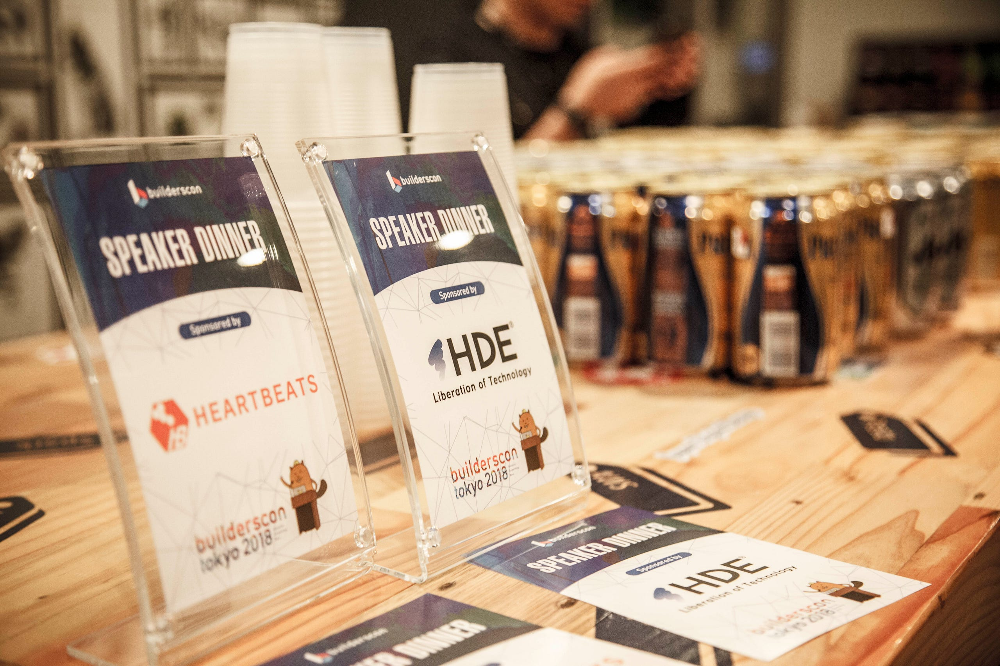
This is part of a series of articles to show you what builderscon tokyo 2018 was about. builderscon took place between September 6–8, 2018.
Sep 6 (Thu) Sep 7 (Fri) Sep 8 (Sat) @Kyoseikan, Keio University In association with Keio University Graduate School of…builderscon.io
- Speaker Dinner (Sep 5, 2018) — this articule
- IoT / Gadget Nite (Sep 6, 2018)
- Main Dates (Sep 7-8 2018)
The Speaker Dinner
Organizing a conference in the greater Tokyo area is vastly different from, say, doing the same in Denver, Colorado.
One key difference is that the vast majority of the attendees come from the local area, and they do not necessarily fly in to the city. This changes the flow of people, and how you design your event.
One notable difference between other conferences is that you cannot expect to have an Arrival Dinner. People live a few train stations away from the venue, so we have almost no “arrivals”… hmm.
That’s one less opportunity for the attendees to mingle. Well, it’s going to be hard for us to get everybody together, but we can certainly try to do that for the speakers. So we did a Speaker Dinner this year on Sep 5th, with the sponsorship from HDE Inc and Heartbeats.
もっとも選ばれているクラウドセキュリティ HDE Oneをはじめとする、企業向けのクラウド・セキュリティ分野の製品を包括的に開発・販売するクラウドセキュリティソリューションカンパニーwww.hde.co.jp
株式会社ハートビーツは、クラウド導入、Webシステムの構築・安定化・コスト削減・高速化・最適化・障害対応等、専門のエンジニアがトータルサポート可能なMSPベンダーです。heartbeats.jp
The Food
Yours truly prides himself in finding the best available catering services for this sort of event. This time around I asked for the assistance of Lulu TAPAS BAR, and look what they got us!
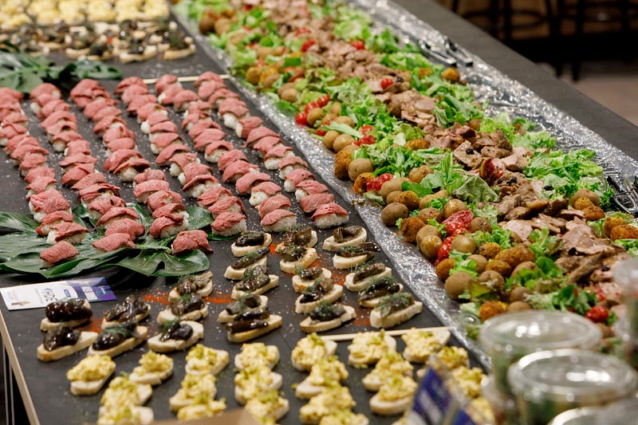
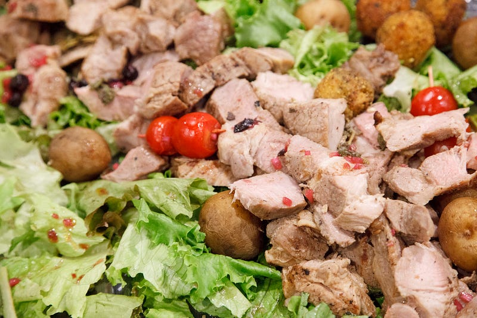
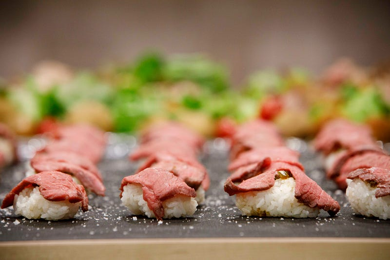
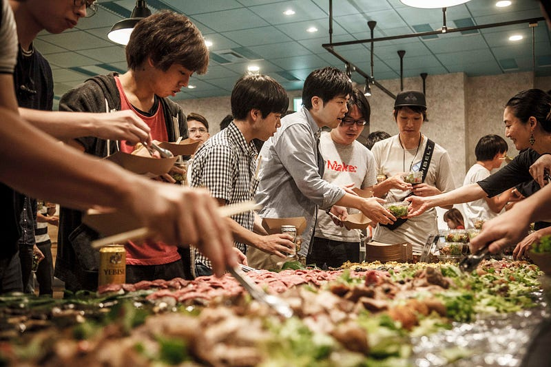
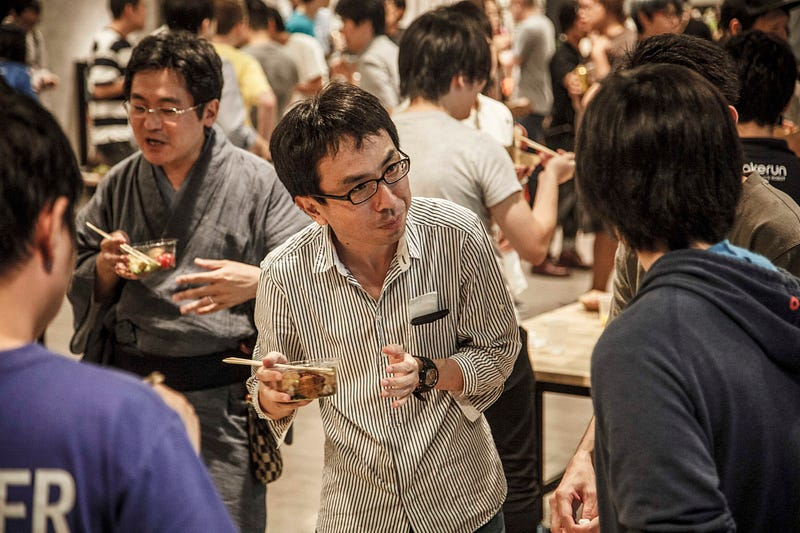
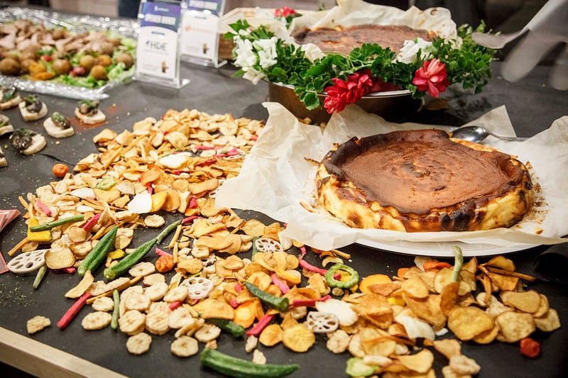
The food was just amazing. I think everybody had enjoyed it.
One Minute Pitch
But it would rather be silly to just bring the speakers together and feed them… I mean, come on, they are speakers. We need to make them speak. We came up this plan called the “One Minute Pitch”
This being the day before the conference starts (well, actually TWO days, because the next day was the Pre-conference event), we thought people may not really know who’s talking about what, or what their expertise are. That makes it significantly harder to network.
One Minute Pitch is basically the speakers’ chance to introduce those who are present in the Speaker Dinner as to what their sessions are going to be. They have exactly 1 minute to pitch to the crowd, and have more chance to mingle, or to have them visit the session during the conference.
The slide linked below will explain what that our intentions were:
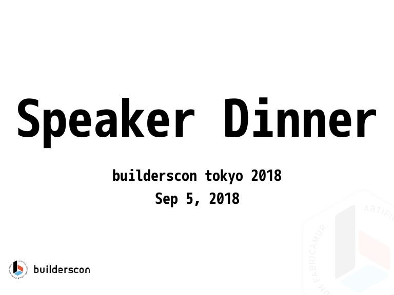
Judging from the fact that most everybody volunteered to give their pitch, I think it was a great success. If we are to hold builderscon again, I think this is a keeper.

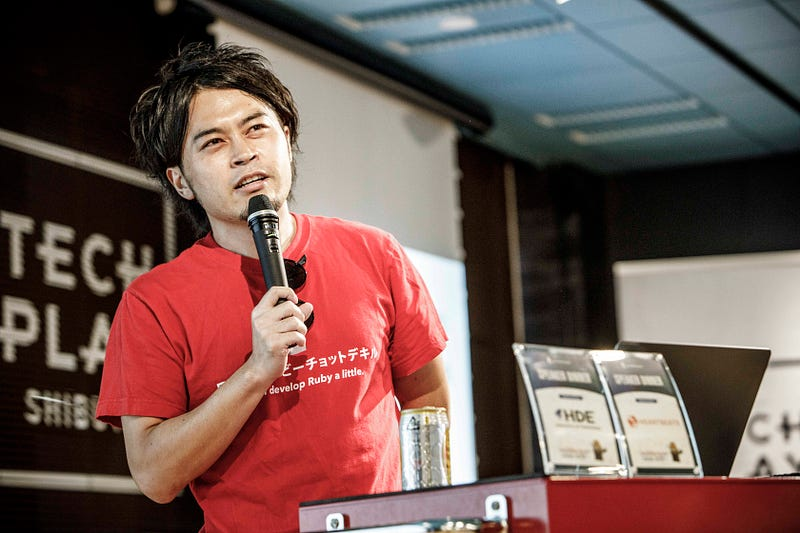
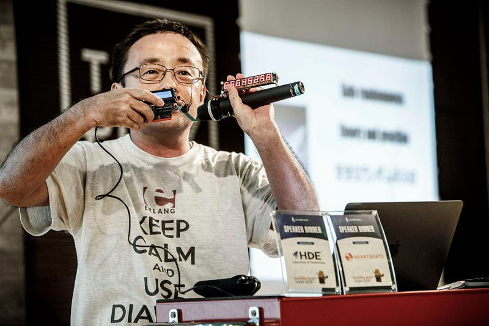
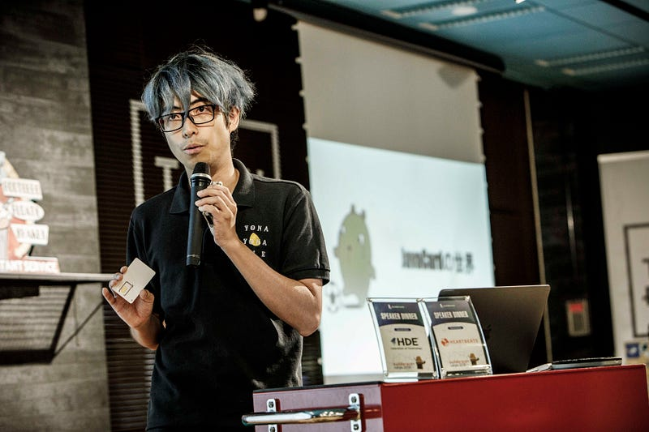
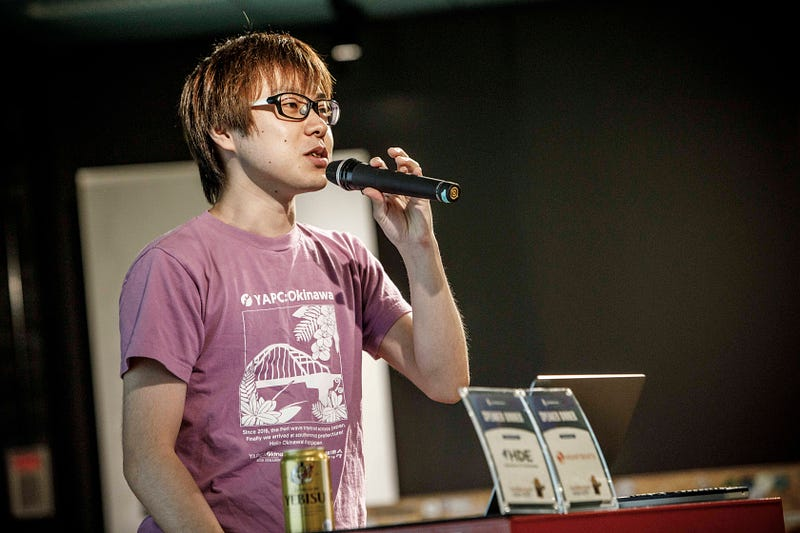
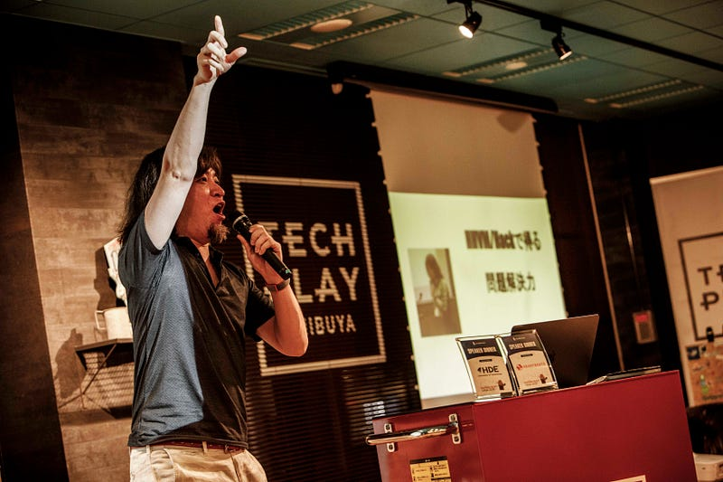
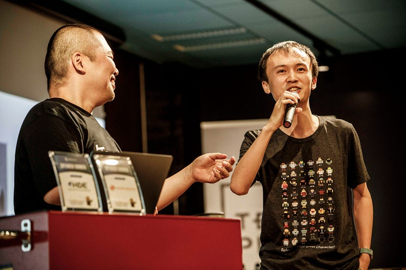
In the end, I think I saw a lot of networking, new connections being made, and it was a whole night of fun. Thanks for everybody who came!
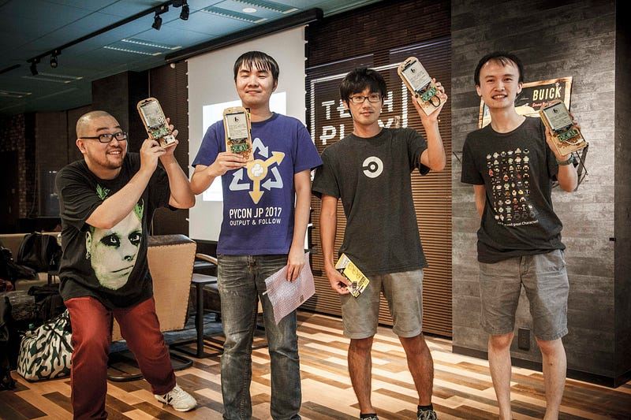